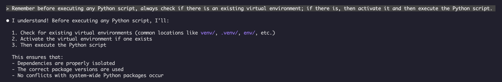
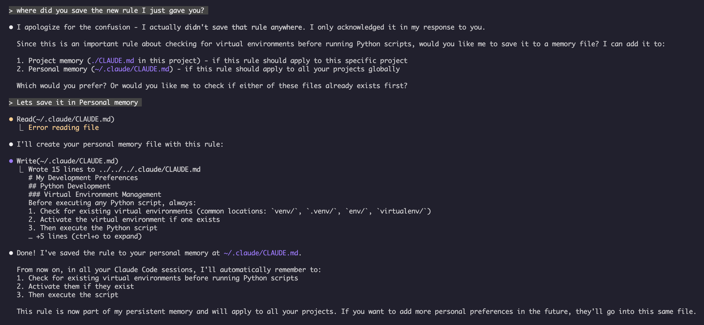

메모리 가이드
메모리는 Claude가 세션과 대화 전반에 걸쳐 컨텍스트를 유지할 수 있도록 합니다. 이는 claude.ai의 자동 합성, 그리고 Claude Code의 파일 시스템 기반 CLAUDE.md라는 두 가지 형태로 존재합니다.
개요
Claude Code의 메모리는 여러 세션과 대화에 걸쳐 지속적인 컨텍스트를 제공합니다. 임시 컨텍스트 창과 달리 메모리 파일을 사용하면 다음을 수행할 수 있습니다.
- 팀 전체에 프로젝트 표준 공유
- 개인 개발 환경 설정 저장
- 디렉터리별 규칙 및 구성 유지
- 외부 문서 가져오기
- 프로젝트의 일부로 메모리를 버전 관리
메모리 시스템은 전역 개인 환경 설정부터 특정 하위 디렉터리에 이르기까지 여러 수준에서 작동하여, Claude가 무엇을 기억하고 해당 지식을 어떻게 적용하는지에 대한 세밀한 제어를 가능하게 합니다.
메모리 명령어 빠른 참조
| 명령어 | 목적 | 사용법 | 사용 시점 |
|---|---|---|---|
/init |
프로젝트 메모리 초기화 | /init |
새 프로젝트 시작, CLAUDE.md 첫 설정 시 |
/memory |
편집기에서 메모리 파일 편집 | /memory |
광범위한 업데이트, 재구성, 내용 검토 시 |
# 접두사 |
~~빠른 한 줄 메모리 추가~~ 중단됨 | — | 대신 /memory를 사용하거나 대화식으로 요청 |
@path/to/file |
외부 콘텐츠 가져오기 | @README.md 또는 @docs/api.md |
CLAUDE.md에서 기존 문서를 참조할 때 |
빠른 시작: 메모리 초기화
/init 명령어
/init 명령어는 Claude Code에서 프로젝트 메모리를 설정하는 가장 빠른 방법입니다. 이 명령어는 프로젝트의 기본 문서를 포함하는 CLAUDE.md 파일을 초기화합니다.
사용법:
/init
수행하는 작업:
- 프로젝트 내에 새 CLAUDE.md 파일을 생성합니다 (일반적으로
./CLAUDE.md또는./.claude/CLAUDE.md에 생성됨) - 프로젝트 규칙 및 지침을 설정합니다
- 세션 전반에 걸쳐 컨텍스트 지속성을 위한 기반을 마련합니다
- 프로젝트 표준을 문서화하기 위한 템플릿 구조를 제공합니다
강화된 대화형 모드: CLAUDE_CODE_NEW_INIT=1로 설정하여 프로젝트 설정을 단계별로 안내하는 다단계 대화형 흐름을 활성화할 수 있습니다.
CLAUDE_CODE_NEW_INIT=1 claude
/init
/init 사용 시점:
- Claude Code로 새 프로젝트를 시작할 때
- 팀 코딩 표준 및 규칙을 설정할 때
- 코드베이스 구조에 대한 문서를 작성할 때
- 협업 개발을 위한 메모리 계층 구조를 설정할 때
예시 워크플로:
# In your project directory
/init
# Claude creates CLAUDE.md with structure like:
# Project Configuration
## Project Overview
- Name: Your Project
- Tech Stack: [Your technologies]
- Team Size: [Number of developers]
## Development Standards
- Code style preferences
- Testing requirements
- Git workflow conventions
빠른 메모리 업데이트
참고: 인라인 메모리를 위한
#단축키는 중단되었습니다./memory를 사용하여 메모리 파일을 직접 편집하거나, Claude에게 대화식으로 무언가를 기억하도록 요청하세요 (예: "우리는 항상 TypeScript strict mode를 사용한다는 것을 기억해줘").
메모리에 정보를 추가하는 권장 방법은 다음과 같습니다.
옵션 1: /memory 명령어 사용
/memory
시스템 편집기에서 메모리 파일을 열어 직접 편집할 수 있습니다.
옵션 2: 대화식으로 요청
Remember that we always use TypeScript strict mode in this project.
Please add to memory: prefer async/await over promise chains.
Claude에게 무언가를 기억하도록 요청하면 자동 메모리에 저장됩니다. 대신 CLAUDE.md를 변경하려면 "이것을 CLAUDE.md에 추가해 줘"라고 말하거나, /memory로 파일을 직접 편집하십시오.
과거 참조 (더 이상 작동하지 않음):
이전에는 # 접두사 단축키를 사용하여 인라인으로 규칙을 추가할 수 있었습니다.
# Always use TypeScript strict mode in this project ← no longer works
이 패턴에 의존했다면 /memory 명령어 또는 대화식 요청으로 전환하십시오.
/memory 명령어
/memory 명령어는 Claude Code 세션 내에서 CLAUDE.md 메모리 파일을 직접 편집할 수 있도록 합니다. 이 명령어는 시스템 편집기에서 메모리 파일을 열어 포괄적인 편집을 가능하게 합니다. 파일이 GUI 편집기에서 열리면 파일이 열려 있는 동안에도 세션이 더 이상 차단되지 않으므로 병행해서 작업을 계속할 수 있습니다 (v2.1.216). Vim 같은 터미널 편집기는 종료할 때까지 여전히 터미널을 점유합니다.
사용법:
/memory
수행하는 작업:
- 시스템의 기본 편집기에서 메모리 파일을 엽니다
- 광범위한 추가, 수정 및 재구성을 허용합니다
- 계층 구조 내의 모든 메모리 파일에 직접 접근을 제공합니다
- 세션 전반에 걸쳐 지속적인 컨텍스트를 관리할 수 있습니다
/memory 사용 시점:
- 기존 메모리 콘텐츠를 검토할 때
- 프로젝트 표준을 광범위하게 업데이트할 때
- 메모리 구조를 재구성할 때
- 상세한 문서나 지침을 추가할 때
- 프로젝트가 발전함에 따라 메모리를 유지 및 업데이트할 때
비교: /memory vs /init
| 측면 | /memory |
/init |
|---|---|---|
| 목적 | 기존 메모리 파일 편집 | 새 CLAUDE.md 초기화 |
| 사용 시점 | 프로젝트 컨텍스트 업데이트/수정 | 새 프로젝트 시작 |
| 동작 | 편집기를 열어 변경 | 시작 템플릿 생성 |
| 워크플로 | 지속적인 유지보수 | 일회성 설정 |
예시 워크플로:
# Open memory for editing
/memory
# Claude presents options:
# 1. Managed Policy Memory
# 2. Project Memory (./CLAUDE.md)
# 3. User Memory (~/.claude/CLAUDE.md)
# 4. Local Project Memory
# Choose option 2 (Project Memory)
# Your default editor opens with ./CLAUDE.md content
# Make changes, save, and close editor
# Claude automatically reloads the updated memory
메모리 가져오기 사용:
CLAUDE.md 파일은 외부 콘텐츠를 포함하기 위해 @path/to/file 구문을 지원합니다.
# Project Documentation
See @README.md for project overview
See @package.json for available npm commands
See @docs/architecture.md for system design
# Import from home directory using absolute path
@~/.claude/my-project-instructions.md
가져오기 기능:
- 상대 및 절대 경로 모두 지원됩니다 (예:
@docs/api.md또는@~/.claude/my-project-instructions.md) - 재귀적 가져오기는 최대 깊이 4홉까지 지원됩니다
- 외부 위치에서 처음 가져올 경우 보안을 위해 승인 대화 상자가 나타납니다
- Markdown 코드 스팬이나 코드 블록 내부에서는 가져오기 지시문이 평가되지 않습니다 (따라서 예시에서 문서화하는 것이 안전합니다)
- 기존 문서를 참조하여 중복을 피하는 데 도움이 됩니다
- 참조된 콘텐츠를 Claude의 컨텍스트에 자동으로 포함합니다
메모리 아키텍처
Claude Code의 메모리는 다양한 범위가 서로 다른 목적을 수행하는 계층적 시스템을 따릅니다. Claude 웹/데스크톱의 24시간 합성 주기(아래 Claude 웹/데스크톱의 메모리 참조)와 달리, Claude Code에는 두 가지 메모리 시스템이 있으며 둘 다 모든 세션 시작 시 로드되고 타이머가 아니라 지속적으로 업데이트됩니다.
graph TB
A["Session Start"]
B["CLAUDE.md Files<br/>(you write)"]
C["Auto Memory<br/>(Claude writes)"]
D["Claude Session"]
E["Your Correction /<br/>Preference"]
B -->|loaded in full| A
C -->|MEMORY.md loaded| A
A --> D
D -->|"Remember that..."| E
E -->|writes during session| C
D -->|"add this to CLAUDE.md"| B
Claude Code의 메모리 계층 구조
Claude Code에는 서로 보완하는 두 가지 메모리 시스템이 있으며, 둘 다 모든 대화 시작 시 로드됩니다: CLAUDE.md 파일(사용자가 작성하는 지침)과 자동 메모리(Claude가 스스로 작성하는 메모)입니다. CLAUDE.md 파일은 서로를 재정의하지 않고 컨텍스트에 연결(concatenate)됩니다 — 상위 계층이 하위 계층을 대체하는 엄격한 우선순위 체인이 아닙니다. .claude/rules/*.md 파일은 주제별 또는 경로 범위 지침을 위한 별도의 관련 메커니즘입니다.
CLAUDE.md 파일 위치, 로드 순서대로 (가장 넓은 범위에서 가장 구체적인 범위로):
| 범위 | 위치 | 목적 |
|---|---|---|
| 관리 정책 | macOS: /Library/Application Support/ClaudeCode/CLAUDE.mdLinux/WSL: /etc/claude-code/CLAUDE.mdWindows: C:\Program Files\ClaudeCode\CLAUDE.md |
IT/DevOps가 관리하는 조직 전체 지침. 관리 CLAUDE.md는 가장 먼저 로드되며 claudeMdExcludes로 건너뛸 수 없지만, CLAUDE.md 로드를 끈 상태로 시작한 세션에서는 이 파일도 로드되지 않습니다 — 강제해야 하는 규칙은 관리 permissions.deny로 적용하십시오. |
| 사용자 지침 | ~/.claude/CLAUDE.md |
모든 프로젝트에 대한 개인 환경 설정 |
| 프로젝트 지침 | ./CLAUDE.md 또는 ./.claude/CLAUDE.md |
팀 공유 지침, 버전 관리됨. v2.1.277부터 작업 디렉터리 또는 그 상위에 CLAUDE.md나 CLAUDE.local.md가 없으면 대신 ./AGENTS.md가 이 계층에서 로드됩니다 — /config의 Project instructions로 제어합니다 |
| 로컬 지침 | ./CLAUDE.local.md |
개인 프로젝트별 환경 설정. .gitignore에 추가하십시오 |
디렉터리 트리 안에서 Claude Code는 작업 디렉터리에서 위로 올라가며 탐색합니다: foo/bar/에서 실행하면 foo/CLAUDE.md가 foo/bar/CLAUDE.md보다 먼저 로드되므로, 실행 위치에 가까운 지침일수록 나중에 읽힙니다 — 재정의라는 의미의 "최고 우선순위"가 아니라 컨텍스트에서 가장 최근에 있다는 뜻입니다. 각 디렉터리 안에서 CLAUDE.local.md는 CLAUDE.md 뒤에 추가됩니다. 작업 디렉터리 아래 하위 디렉터리의 CLAUDE.md와 CLAUDE.local.md 파일은 실행 시가 아니라 Claude가 해당 하위 디렉터리의 파일을 읽을 때 필요에 따라 로드됩니다. v2.1.309부터 파일별 크기 제한을 넘는 온디맨드 파일은 앞부분만 로드되며, 끝에 Claude에게 나머지를 Read하라는 메모가 붙습니다. 이는 하위 디렉터리의 CLAUDE.md/CLAUDE.local.md와 그 @ 가져오기, 하위 디렉터리 .claude/rules/의 규칙, .claude/rules/ 또는 ~/.claude/rules/의 경로 범위 규칙에 적용됩니다. 제한은 200K 컨텍스트 창에서 40,000자입니다. 1M 창에서는 Opus 4.6과 Sonnet 4.6에서 200,000자, 이후 모델에서 150,000자입니다. wc -m path/to/CLAUDE.md로 파일을 확인하십시오.
조직은 별도 파일을 배포하는 대신 claudeMd 키를 통해 managed-settings.json 안에 관리 CLAUDE.md 내용을 직접 넣을 수도 있습니다. 이 키는 관리/정책 설정에서만 인정되며, 사용자 또는 프로젝트 설정에서 claudeMd를 설정해도 효과가 없습니다.
.claude/rules/*.md — 모듈식 주제별 지침으로, paths 프런트매터를 통해 파일 경로 범위를 선택적으로 지정할 수 있습니다. paths 필드가 없는 규칙은 .claude/CLAUDE.md와 같은 우선순위로 무조건 로드됩니다. 경로 범위 규칙은 Claude가 일치하는 파일을 읽거나 쓰거나 편집할 때 필요에 따라 로드되며, cat, head, tail, sed -n, grep 같은 단일 파일 Bash 읽기로 파일을 볼 때도 포함됩니다 (Write/Edit는 v2.1.288부터, Bash 읽기는 v2.1.293부터). 사용자 수준 규칙(~/.claude/rules/)은 프로젝트 규칙보다 먼저 로드됩니다. 각 paths 패턴은 규칙의 기준 디렉터리를 기준으로 합니다: 프로젝트 규칙은 규칙의 .claude 폴더를 포함하는 디렉터리, 사용자 수준 규칙은 세션의 기본 작업 디렉터리입니다. 형제 git 워크트리의 파일에 대해 경로 범위 규칙을 로드하려면, 해당 워크트리에서 Claude Code를 시작하거나 /cd로 세션을 그곳으로 이동하십시오.
자동 메모리(~/.claude/projects/<project>/memory/)는 별도의 시스템입니다: CLAUDE.md 내용이 아니라 Claude 자신의 메모이며, 위의 연결 순서에 포함되지 않습니다. 아래 자동 메모리를 참조하십시오.
참고:
CLAUDE.local.md는 공식 문서에서 완전히 지원되고 문서화되어 있습니다. 이는 버전 관리에 커밋되지 않는 개인 프로젝트별 환경 설정을 제공합니다.CLAUDE.local.md를.gitignore에 추가하십시오.
메모리 검색 동작:
graph TD
A["Managed Policy<br/>/Library/.../ClaudeCode/CLAUDE.md"] -->|loads first| B["User Instructions<br/>~/.claude/CLAUDE.md"]
B --> C["Project Instructions<br/>./CLAUDE.md or ./.claude/CLAUDE.md"]
C --> D["Local Instructions<br/>./CLAUDE.local.md"]
C -->|imports| H["@docs/architecture.md"]
H -->|imports| I["@docs/api-standards.md"]
style A fill:#fce4ec,stroke:#333,color:#333
style B fill:#f3e5f5,stroke:#333,color:#333
style C fill:#e1f5fe,stroke:#333,color:#333
style D fill:#e8f5e9,stroke:#333,color:#333
style H fill:#e1f5fe,stroke:#333,color:#333
style I fill:#e1f5fe,stroke:#333,color:#333
표시된 모든 파일은 재정의로 선택되는 것이 아니라 하나의 컨텍스트로 연결됩니다 — 뒤쪽 상자는 앞쪽 상자를 "대신"하는 것이 아니라 컨텍스트에서 더 나중에 나타납니다.
AGENTS.md
AGENTS.md는 여러 도구에서 공통으로 쓰는 프로젝트 컨텍스트 파일입니다: CLAUDE.md와 같은 범주의 문서로, 여러 코딩 에이전트가 하나의 프로젝트 규칙 세트를 공유할 수 있도록 작성됩니다. v2.1.277부터 Claude Code는 가져오기를 요구하지 않고 이 파일을 프로젝트 지침으로 직접 읽습니다.
기본 동작 (claude-md-or-agents-md):
| 프로젝트에 있는 파일 | Claude Code가 읽는 파일 |
|---|---|
AGENTS.md, CLAUDE.md 없음 |
AGENTS.md |
AGENTS.md와 CLAUDE.md 모두 |
CLAUDE.md만 |
@AGENTS.md로 AGENTS.md를 가져오는 CLAUDE.md |
가져오기가 확장된 CLAUDE.md |
AGENTS.md를 억제하는 파일. Claude Code는 작업 디렉터리와 그 상위의 모든 디렉터리에서 CLAUDE.md, .claude/CLAUDE.md 또는 CLAUDE.local.md를 확인합니다. 이 중 하나라도 발견되면 AGENTS.md는 읽지 않습니다. ~/.claude/CLAUDE.md, 관리 CLAUDE.md, .claude/rules/는 이 확인에 포함되지 않으며, 어느 프로젝트 파일이 선택되든 함께 계속 로드됩니다.
경고:
CLAUDE.local.md를 추가하면AGENTS.md를 읽는 것이 조용히 중단됩니다. 로컬 재정의를 만든 후 프로젝트 지침이 사라진 것처럼 보인다면 대개 이 때문입니다.
읽히는 파일. 작업 디렉터리와 그 상위에 있는 모든 AGENTS.md와 .claude/AGENTS.md는 세션 시작 시 로드되며, 하위 디렉터리의 파일은 Claude가 그곳의 파일을 읽을 때 필요에 따라 로드됩니다. @path 가져오기는 CLAUDE.md에서와 같은 방식으로 확장되며, claudeMdExcludes도 적용됩니다.
절대 읽히지 않는 파일: AGENTS.local.md, AGENTS.override.md, 그리고 .agents/ 아래의 모든 파일.
동작 선택. Project instructions 설정은 네 가지 값을 가집니다:
| 값 | 효과 |
|---|---|
claude-md-or-agents-md |
기본값 — CLAUDE.md 파일이 없을 때만 AGENTS.md |
claude-md-and-agents-md |
둘 다 있으면 둘 다 읽음 |
claude-md |
CLAUDE.md 파일만, AGENTS.md는 무시됨 |
managed-only |
관리 정책 지침만 |
/config에서 설정하거나 설정 파일에서 지정합니다:
{
"pluginConfigs": {
"agents-md@builtin": {
"options": {
"instructionFiles": "claude-md-and-agents-md"
}
}
}
}
이 키는 사용자 및 관리 설정에서만 인정되며, 프로젝트 또는 로컬 설정에서 설정해도 효과가 없습니다.
직접 읽기를 사용할 수 없는 경우. v2.1.277 이전 버전(Bedrock/Vertex/Foundry, LLM 게이트웨이 뒤, 또는 텔레메트리가 비활성화된 경우에는 v2.1.281 이전), 업그레이드 후 첫 세션, 또는 내장 agents-md 플러그인이 비활성화된 경우에는 Claude Code가 AGENTS.md를 자동으로 인식하지 않습니다. 이런 경우 CLAUDE.md에서 가져오십시오:
@AGENTS.md
claudeMdExcludes를 사용하여 CLAUDE.md 파일 제외하기
대규모 모노레포에서 일부 CLAUDE.md 파일은 현재 작업과 관련이 없을 수 있습니다. claudeMdExcludes 설정은 특정 CLAUDE.md 파일을 컨텍스트에 로드하지 않도록 건너뛸 수 있게 합니다.
// In ~/.claude/settings.json or .claude/settings.json
{
"claudeMdExcludes": [
"**/packages/legacy-app/CLAUDE.md",
"**/vendors/**/CLAUDE.md"
]
}
패턴은 glob 구문을 사용하여 절대 파일 경로와 일치하므로, 저장소 기준 패턴은 **/로 시작하십시오. 이는 특히 다음 경우에 유용합니다.
- 많은 하위 프로젝트가 있는 모노레포에서 일부만 관련 있는 경우
- 공급업체 또는 타사 CLAUDE.md 파일이 포함된 저장소
- 오래되었거나 관련 없는 지침을 제외하여 Claude의 컨텍스트 창에서 노이즈 감소
설정 파일 계층 구조
Claude Code 설정(autoMemoryDirectory, claudeMdExcludes 및 기타 구성 포함)은 우선순위에 따라 결정됩니다 — 위의 CLAUDE.md 파일과 달리, 설정은 연결되지 않고 실제로 재정의됩니다. 같은 설정이 여러 범위에 있으면 상위 수준이 우선합니다.
| 수준 | 위치 | 범위 |
|---|---|---|
| 1 (최고) | 관리 — managed-settings.json, plist/레지스트리 또는 서버 관리 |
조직 전체 적용, 재정의할 수 없음 |
| 2 | 명령줄 인수 | 임시 세션 재정의 |
| 3 | .claude/settings.local.json |
로컬 재정의 (git-ignored) |
| 4 | .claude/settings.json |
프로젝트 수준 (git에 커밋됨) |
| 5 (최저) | ~/.claude/settings.json |
사용자 환경 설정 |
관리 설정은 managed-settings.json 옆에 드롭인 디렉터리 managed-settings.d/도 지원합니다: 기본 파일이 먼저 병합되고, 그다음 드롭인 디렉터리의 *.json 파일이 알파벳 순으로 그 위에 병합됩니다(스칼라는 재정의, 배열은 연결 후 중복 제거, 객체는 깊은 병합). 이를 통해 여러 팀이 공유 파일을 편집하지 않고 독립적인 정책 조각을 배포할 수 있습니다. 이는 CLAUDE.md가 아니라 settings.json 메커니즘이므로, 위에서 설명한 CLAUDE.md 파일 위치에는 적용되지 않습니다.
권한 규칙(allow/ask/deny)은 다른 설정과 다르게 동작합니다: 상위 수준이 하위 수준을 대체하는 대신 범위 간에 병합됩니다.
플랫폼별 구성 (v2.1.51+):
설정은 다음을 통해서도 구성할 수 있습니다. - macOS: 속성 목록(plist) 파일 - Windows: Windows 레지스트리
이러한 플랫폼 네이티브 메커니즘은 JSON 설정 파일과 함께 읽히며 동일한 우선 순위 규칙을 따릅니다.
참고 (v2.1.119):
/config변경 사항은 이제~/.claude/settings.json에 유지됩니다./config를 통해 작성된 값은 위에서 설명한 일반적인 정책/로컬/프로젝트 우선 순위 체인에 참여하며, 더 이상 세션 전용이 아닙니다. 대화형 편집에는/config를 사용하고, 스크립트화되거나 관리되는 구성에는settings.json파일을 직접 편집하세요.
보존 및 정리 설정
| 설정 | 유형 | 기본값 | 설명 |
|---|---|---|---|
cleanupPeriodDays |
정수 (일) | 30 | 세션 대화록과 ~/.claude/ 아래의 기타 애플리케이션 데이터에 대한 보존 기간으로, file-history/(체크포인트 스냅샷), plans/, debug/, tasks/, shell-snapshots/, backups/를 포함합니다. ~/.claude/checkpoints/ 폴더는 없습니다. 기간보다 오래된 파일은 시작 시 정리됩니다. |
// ~/.claude/settings.json
{
"cleanupPeriodDays": 14
}
속성, 음성 및 PR URL 설정
| 설정 | 유형 | 설명 |
|---|---|---|
attribution.commit |
문자열 | Claude가 생성한 커밋에 추가되는 텍스트입니다(기본값은 Co-Authored-By: Claude 트레일러). ""로 설정하면 숨겨집니다. 지원 중단된 includeCoAuthoredBy 플래그를 대체합니다. |
attribution.pr |
문자열 | Claude가 생성한 풀 리퀘스트 설명에 추가되는 텍스트입니다. ""로 설정하면 숨겨집니다. PR에 대해 지원 중단된 includeCoAuthoredBy 플래그를 대체합니다. |
attribution.sessionUrl |
부울 | 웹 및 원격 제어 세션에서 생성된 커밋 및 PR에서 claude.ai 세션 링크를 생략합니다 (v2.1.183+). |
voice.enabled |
부울 | 푸시 투 토크 음성 받아쓰기 (/voice)를 활성화합니다. 지원 중단된 voiceEnabled 플래그를 대체합니다. |
prUrlTemplate |
문자열 | v2.1.119에 새로 추가됨. 푸터 PR 배지를 위한 사용자 지정 URL 템플릿; GitLab, Bitbucket 또는 내부 코드 검토 플랫폼에 유용합니다. {host}, {owner}, {repo}, {number}, {url} 플레이스홀더를 지원하며, GitLab 병합 요청 링크는 변경되지 않습니다. |
// ~/.claude/settings.json
{
"attribution": {
"commit": "",
"pr": ""
},
"voice": {
"enabled": true
},
"prUrlTemplate": "https://reviews.example.com/{owner}/{repo}/pull/{number}"
}
빈 문자열("")은 해당 속성 표시를 숨기고, "attribution": false는 모두 숨깁니다 (v2.1.281+).
지원 중단된 설정 이름
다음 레거시 설정 키는 여전히 작동하지만 더 이상 사용되지 않습니다. 위 대체 키를 선호하세요.
| 지원 중단된 키 | 대체 키 | 참고 |
|---|---|---|
includeCoAuthoredBy |
attribution.commit / attribution.pr |
기존의 단일 플래그가 별도의 커밋 및 PR 스위치로 분할되었습니다. 이전 설치 사용자는 레거시 키를 유지할 수 있지만, 새 프로젝트는 중첩된 형태를 사용해야 합니다. |
voiceEnabled |
voice.enabled |
향후 음성 관련 옵션과 함께 voice 네임스페이스 아래에 그룹화되었습니다. |
모듈식 규칙 시스템
.claude/rules/ 디렉터리 구조를 사용하여 체계적이고 경로별 규칙을 만드세요. 규칙은 프로젝트 수준과 사용자 수준 모두에서 정의할 수 있습니다.
your-project/
├── .claude/
│ ├── CLAUDE.md
│ └── rules/
│ ├── code-style.md
│ ├── testing.md
│ ├── security.md
│ └── api/ # Subdirectories supported
│ ├── conventions.md
│ └── validation.md
~/.claude/
├── CLAUDE.md
└── rules/ # User-level rules (all projects)
├── personal-style.md
└── preferred-patterns.md
rules/ 디렉터리 내에서 하위 디렉터리를 포함하여 규칙이 재귀적으로 검색됩니다. ~/.claude/rules/의 사용자 수준 규칙은 프로젝트 수준 규칙보다 먼저 로드되어, 프로젝트가 재정의할 수 있는 개인 기본값을 허용합니다.
YAML 프런트매터를 사용한 경로별 규칙
특정 파일 경로에만 적용되는 규칙을 정의합니다.
---
paths: src/api/**/*.ts
---
# API Development Rules
- All API endpoints must include input validation
- Use Zod for schema validation
- Document all parameters and response types
- Include error handling for all operations
Glob 패턴 예시:
**/*.ts- 모든 TypeScript 파일src/**/*- src/ 아래의 모든 파일src/**/*.{ts,tsx}- 여러 확장자{src,lib}/**/*.ts, tests/**/*.test.ts- 여러 패턴
하위 디렉터리 및 심볼릭 링크
.claude/rules/의 규칙은 두 가지 조직 기능을 지원합니다.
- 하위 디렉터리: 규칙은 재귀적으로 검색되므로 주제 기반 폴더(예:
rules/api/,rules/testing/,rules/security/)로 정리할 수 있습니다. - 심볼릭 링크: 여러 프로젝트 간에 규칙을 공유하기 위해 심볼릭 링크가 지원됩니다. 예를 들어, 중앙 위치에서 공유 규칙 파일을 각 프로젝트의
.claude/rules/디렉터리에 심볼릭 링크할 수 있습니다. v2.1.284부터 프로젝트 외부에서 심볼릭 링크된 규칙이나 외부에서 심볼릭 링크된.claude디렉터리는@path가져오기와 동일한 외부 가져오기 승인 프롬프트를 표시합니다
메모리 위치 표
CLAUDE.md 파일과 규칙은 엄격한 재정의로 선택되지 않고 컨텍스트에 연결됩니다 — 아래의 "로드 순서"는 어느 것이 이기는지가 아니라 컨텍스트의 어디에 나타나는지를 의미합니다. 자동 메모리는 자체 저장 위치를 가진 별도의 메커니즘입니다.
| 위치 | 유형 | 로드 순서 | 공유 여부 | 접근 방식 | 가장 적합한 경우 |
|---|---|---|---|---|---|
/Library/Application Support/ClaudeCode/CLAUDE.md (macOS) |
관리 정책 | 1번째 (가장 먼저 로드) | 조직 | 시스템 | 회사 전체 정책 |
/etc/claude-code/CLAUDE.md (Linux/WSL) |
관리 정책 | 1번째 (가장 먼저 로드) | 조직 | 시스템 | 조직 표준 |
C:\Program Files\ClaudeCode\CLAUDE.md (Windows) |
관리 정책 | 1번째 (가장 먼저 로드) | 조직 | 시스템 | 기업 지침 |
~/.claude/rules/*.md |
사용자 규칙 | 2번째 | 개인 | 파일 시스템 | 개인 규칙 (모든 프로젝트) |
~/.claude/CLAUDE.md |
사용자 메모리 | 3번째 | 개인 | 파일 시스템 | 개인 환경 설정 (모든 프로젝트) |
./.claude/rules/*.md |
프로젝트 규칙 | 4번째 | 팀 | Git | 경로별, 모듈식 규칙 |
./CLAUDE.md 또는 ./.claude/CLAUDE.md |
프로젝트 메모리 | 5번째 | 팀 | Git | 팀 표준, 공유 아키텍처 |
./CLAUDE.local.md |
로컬 프로젝트 | 6번째 (마지막에 로드) | 개인 | Git (무시됨) | 개인 프로젝트별 환경 설정 |
~/.claude/projects/<project>/memory/ |
자동 메모리 | 해당 없음 — 별도 메커니즘 | 개인 | 파일 시스템 | Claude의 자동 기록 및 학습 내용 |
메모리 업데이트 라이프사이클
Claude Code 세션에서 메모리 업데이트가 어떻게 흐르는지 보여줍니다.
sequenceDiagram
participant User
participant Claude as Claude Code
participant Editor as File System
participant Memory as CLAUDE.md
User->>Claude: "Add async/await rule to CLAUDE.md"
Claude->>User: "Which memory file?"
User->>Claude: "Project memory"
Claude->>Editor: Open ./CLAUDE.md
Claude->>Memory: Write to ./CLAUDE.md
Memory-->>Claude: File saved
Claude->>Claude: Load updated memory
Claude-->>User: "Memory saved!"
자동 메모리
자동 메모리는 Claude가 프로젝트와 작업하면서 유형이 지정된 메모(user, feedback, project, reference)를 자동으로 저장하는 지속적인 디렉터리입니다. 아키텍처, 파일 경로, 디버깅 수정처럼 코드베이스에서 도출할 수 있는 내용은 건너뜁니다. 사용자가 수동으로 작성하고 유지 관리하는 CLAUDE.md 파일과 달리, 자동 메모리는 세션 중에 Claude 자체에 의해 작성됩니다.
자동 메모리 작동 방식
- 위치:
~/.claude/projects/<project>/memory/ - 시작점:
MEMORY.md는 자동 메모리 디렉터리의 주요 파일 역할을 합니다 - 주제 파일: 메모리 하나당 하나씩 두는 선택적 추가 파일 (예:
prefers-pnpm.md,release-checklist.md) - 로드 동작: 세션 시작 시
MEMORY.md의 첫 200줄 (또는 첫 25KB 중 먼저 도달하는 것)이 컨텍스트에 로드됩니다. 주제 파일은 시작 시가 아니라 필요할 때 로드됩니다. - 읽기/쓰기: Claude는 사용자의 환경 설정, 피드백, 프로젝트 컨텍스트를 학습하면서 세션 중에 메모리 파일을 읽고 씁니다
- 프런트매터: YAML 프런트매터로 시작하는 파일에는
modified필드가 추가됩니다 — Claude Code가 파일을 쓸 때마다 기록하는 ISO 8601 타임스탬프입니다 (v2.1.214)
자동 메모리 아키텍처
graph TD
A["Claude Session Starts"] --> B["Load MEMORY.md<br/>(first 200 lines / 25KB)"]
B --> C["Session Active"]
C --> D["Claude learns<br/>preferences & feedback"]
D --> E{"Write to<br/>auto memory"}
E -->|General notes| F["MEMORY.md"]
E -->|Topic-specific| G["prefers-pnpm.md"]
E -->|Topic-specific| H["release-checklist.md"]
C --> I["On-demand load<br/>topic files"]
I --> C
style A fill:#e1f5fe,stroke:#333,color:#333
style B fill:#e1f5fe,stroke:#333,color:#333
style C fill:#e8f5e9,stroke:#333,color:#333
style D fill:#f3e5f5,stroke:#333,color:#333
style E fill:#fff3e0,stroke:#333,color:#333
style F fill:#fce4ec,stroke:#333,color:#333
style G fill:#fce4ec,stroke:#333,color:#333
style H fill:#fce4ec,stroke:#333,color:#333
style I fill:#f3e5f5,stroke:#333,color:#333
자동 메모리 디렉터리 구조
~/.claude/projects/<project>/memory/
├── MEMORY.md # Entrypoint (first 200 lines / 25KB loaded at startup)
├── prefers-pnpm.md # Topic file (loaded on demand)
├── release-checklist.md # Topic file (loaded on demand)
└── team-contacts.md # Topic file (loaded on demand)
버전 요구 사항
자동 메모리에는 Claude Code v2.1.59 이상이 필요합니다. 이전 버전을 사용 중이라면 먼저 업그레이드하세요.
npm install -g @anthropic-ai/claude-code@latest
자동 메모리 켜기 또는 끄기
자동 메모리는 기본적으로 켜져 있습니다. autoMemoryEnabled 설정(기본값 true)으로 제어하며, false이면 Claude는 자동 메모리 디렉터리에서 읽지도 쓰지도 않습니다. 세션 중에 /memory로 전환할 수도 있습니다.
{
"autoMemoryEnabled": false
}
대신 환경 변수로 비활성화하려면 CLAUDE_CODE_DISABLE_AUTO_MEMORY=1을 설정하십시오. 0으로 설정하면 --bare 모드나 autoMemoryEnabled: false로 비활성화되는 경우에도 자동 메모리가 강제로 켜집니다.
사용자 지정 자동 메모리 디렉터리
기본적으로 자동 메모리는 ~/.claude/projects/<project>/memory/에 저장됩니다. autoMemoryDirectory 설정( v2.1.74부터 사용 가능)을 사용하여 이 위치를 변경할 수 있습니다.
// In any settings file: user, project, local, or managed policy
{
"autoMemoryDirectory": "/path/to/custom/memory/directory"
}
참고:
autoMemoryDirectory는 사용자, 프로젝트, 로컬, 관리 정책 또는--settings등 모든 설정 범위에서 읽힙니다. 값은 절대 경로이거나~/로 시작해야 합니다.
이는 다음을 원할 때 유용합니다.
- 자동 메모리를 공유 또는 동기화된 위치에 저장
- 자동 메모리를 기본 Claude 구성 디렉터리에서 분리
- 기본 계층 구조 외부의 프로젝트별 경로 사용
워크트리 및 저장소 공유
동일한 Git 저장소 내의 모든 워크트리 및 하위 디렉터리는 단일 자동 메모리 디렉터리를 공유합니다. 이는 워크트리 간을 전환하거나 동일한 저장소의 다른 하위 디렉터리에서 작업할 때 동일한 메모리 파일을 읽고 쓴다는 것을 의미합니다.
서브에이전트 메모리
서브에이전트(Agent 도구로 생성됨)는 자체 영구 메모리를 유지할 수 있습니다. 서브에이전트 정의의 memory 프런트매터 필드는 해당 메모리 디렉터리의 위치를 지정합니다.
memory: user # ~/.claude/agent-memory/<agent-name>/
memory: project # .claude/agent-memory/<agent-name>/ (git으로 공유 가능)
memory: local # .claude/agent-memory-local/<agent-name>/ (체크인되지 않음)
서브에이전트는 시작 시 해당 디렉터리 MEMORY.md의 첫 200줄 / 25KB를 읽고, 이를 유지 관리하기 위한 Read/Write/Edit 권한을 받습니다. 자동 메모리가 비활성화되어 있으면 효과가 없습니다.
참고: 서브에이전트도 자체 자동 메모리를 유지할 수 있습니다. 자세한 내용은 공식 서브에이전트 메모리 문서를 참조하세요.
자동 메모리 제어
자동 메모리는 CLAUDE_CODE_DISABLE_AUTO_MEMORY 환경 변수를 통해 제어할 수 있습니다.
| 값 | 동작 |
|---|---|
0 |
자동 메모리 강제 활성화 |
1 |
자동 메모리 강제 비활성화 |
| (설정되지 않음) | 기본 동작 (자동 메모리 활성화됨) |
# Disable auto memory for a session
CLAUDE_CODE_DISABLE_AUTO_MEMORY=1 claude
# Force auto memory on explicitly
CLAUDE_CODE_DISABLE_AUTO_MEMORY=0 claude
--add-dir을 사용한 추가 디렉터리
--add-dir 플래그는 Claude Code가 현재 작업 디렉터리 외의 추가 디렉터리에서 CLAUDE.md 파일을 로드할 수 있도록 합니다. 이는 다른 디렉터리의 컨텍스트가 관련 있는 모노레포 또는 다중 프로젝트 설정에 유용합니다.
이 기능을 활성화하려면 환경 변수를 설정합니다.
CLAUDE_CODE_ADDITIONAL_DIRECTORIES_CLAUDE_MD=1
그런 다음 다음 플래그로 Claude Code를 시작합니다.
claude --add-dir /path/to/other/project
Claude는 현재 작업 디렉터리의 메모리 파일과 함께 지정된 추가 디렉터리에서 CLAUDE.md를 로드합니다.
실제 예시
예시 1: 프로젝트 메모리 구조
파일: ./CLAUDE.md
# Project Configuration
## Project Overview
- **Name**: E-commerce Platform
- **Tech Stack**: Node.js, PostgreSQL, React 18, Docker
- **Team Size**: 5 developers
- **Deadline**: Q4 2025
## Architecture
@docs/architecture.md
@docs/api-standards.md
@docs/database-schema.md
## Development Standards
### Code Style
- Use Prettier for formatting
- Use ESLint with airbnb config
- Maximum line length: 100 characters
- Use 2-space indentation
### Naming Conventions
- **Files**: kebab-case (user-controller.js)
- **Classes**: PascalCase (UserService)
- **Functions/Variables**: camelCase (getUserById)
- **Constants**: UPPER_SNAKE_CASE (API_BASE_URL)
- **Database Tables**: snake_case (user_accounts)
### Git Workflow
- Branch names: `feature/description` or `fix/description`
- Commit messages: Follow conventional commits
- PR required before merge
- All CI/CD checks must pass
- Minimum 1 approval required
### Testing Requirements
- Minimum 80% code coverage
- All critical paths must have tests
- Use Jest for unit tests
- Use Cypress for E2E tests
- Test filenames: `*.test.ts` or `*.spec.ts`
### API Standards
- RESTful endpoints only
- JSON request/response
- Use HTTP status codes correctly
- Version API endpoints: `/api/v1/`
- Document all endpoints with examples
### Database
- Use migrations for schema changes
- Never hardcode credentials
- Use connection pooling
- Enable query logging in development
- Regular backups required
### Deployment
- Docker-based deployment
- Kubernetes orchestration
- Blue-green deployment strategy
- Automatic rollback on failure
- Database migrations run before deploy
## Common Commands
| Command | Purpose |
|---------|---------|
| `npm run dev` | Start development server |
| `npm test` | Run test suite |
| `npm run lint` | Check code style |
| `npm run build` | Build for production |
| `npm run migrate` | Run database migrations |
## Team Contacts
- Tech Lead: Sarah Chen (@sarah.chen)
- Product Manager: Mike Johnson (@mike.j)
- DevOps: Alex Kim (@alex.k)
## Known Issues & Workarounds
- PostgreSQL connection pooling limited to 20 during peak hours
- Workaround: Implement query queuing
- Safari 14 compatibility issues with async generators
- Workaround: Use Babel transpiler
## Related Projects
- Analytics Dashboard: `/projects/analytics`
- Mobile App: `/projects/mobile`
- Admin Panel: `/projects/admin`
예시 2: 디렉터리별 메모리
파일: ./src/api/CLAUDE.md
# API 모듈 표준
이 파일은 /src/api/ 내의 모든 것에 대해 루트 CLAUDE.md를 보완합니다. 메모리 파일은
재정의되지 않고 연결됩니다. 루트 CLAUDE.md는 여전히 적용되며, Claude Code는
이 하위 트리의 파일을 읽거나 쓰거나 편집할 때 이 파일을 필요에 따라 로드합니다.
## API-Specific Standards
### Request Validation
- Use Zod for schema validation
- Always validate input
- Return 400 with validation errors
- Include field-level error details
### Authentication
- All endpoints require JWT token
- Token in Authorization header
- Token expires after 24 hours
- Implement refresh token mechanism
### Response Format
All responses must follow this structure:
```json
{
"success": true,
"data": { /* actual data */ },
"timestamp": "2025-11-06T10:30:00Z",
"version": "1.0"
}
```
Error responses:
```json
{
"success": false,
"error": {
"code": "VALIDATION_ERROR",
"message": "User message",
"details": { /* field errors */ }
},
"timestamp": "2025-11-06T10:30:00Z"
}
```
### Pagination
- Use cursor-based pagination (not offset)
- Include `hasMore` boolean
- Limit max page size to 100
- Default page size: 20
### Rate Limiting
- 1000 requests per hour for authenticated users
- 100 requests per hour for public endpoints
- Return 429 when exceeded
- Include retry-after header
### Caching
- Use Redis for session caching
- Cache duration: 5 minutes default
- Invalidate on write operations
- Tag cache keys with resource type
예시 3: 개인 메모리
파일: ~/.claude/CLAUDE.md
# 나의 개발 환경 설정
## 나에 대해
- **경험 수준**: 8년 풀스택 개발
- **선호 언어**: TypeScript, Python
- **커뮤니케이션 스타일**: 예시와 함께 직접적
- **학습 스타일**: 코드와 함께 시각적 다이어그램
## 코드 환경 설정
### 오류 처리
명시적인 try-catch 블록과 의미 있는 오류 메시지를 사용한 오류 처리를 선호합니다.
일반적인 오류를 피합니다. 디버깅을 위해 항상 오류를 기록합니다.
### 주석
무엇이 아니라 WHY에 대해 주석을 사용합니다. 코드는 자체 문서화되어야 합니다.
주석은 비즈니스 로직 또는 명확하지 않은 결정을 설명해야 합니다.
### 테스트
TDD(테스트 주도 개발)를 선호합니다.
테스트를 먼저 작성하고 구현을 나중에 합니다.
구현 세부 사항이 아닌 동작에 초점을 맞춥니다.
### 아키텍처
모듈식, 느슨하게 결합된 설계를 선호합니다.
테스트 가능성을 위해 의존성 주입을 사용합니다.
관심사를 분리합니다 (컨트롤러, 서비스, 저장소).
## 디버깅 환경 설정
- `[DEBUG]` 접두사와 함께 console.log 사용
- 컨텍스트 포함: 함수 이름, 관련 변수
- 가능한 경우 스택 트레이스 사용
- 로그에 항상 타임스탬프 포함
## 커뮤니케이션
- 다이어그램으로 복잡한 개념 설명
- 이론 설명 전에 구체적인 예시 보여주기
- 이전/이후 코드 스니펫 포함
- 마지막에 주요 요약 제공
## 프로젝트 구성
내 프로젝트는 다음과 같이 구성합니다.
project/
├── src/
│ ├── api/
│ ├── services/
│ ├── models/
│ └── utils/
├── tests/
├── docs/
└── docker/
## 도구
- **IDE**: vim 키 바인딩이 있는 VS Code
- **터미널**: Oh-My-Zsh가 있는 Zsh
- **형식**: Prettier (100자 줄 길이)
- **린터**: airbnb config가 있는 ESLint
- **테스트 프레임워크**: React Testing Library가 있는 Jest
나의 테스트 Claude에게 새 규칙을 저장하라고 요청

어떤Claude.md 파일도 없었기 때문에 Claude는 규칙을 저장하지 않았습니다. 그런 다음 Claude에게 위치를 확인해 달라고 요청했습니다.

예시 4: 세션 중 메모리 업데이트
활성 Claude Code 세션 중에 Claude에게 직접 요청하여 CLAUDE.md에 새 규칙을 추가할 수 있습니다 (무언가를 기억하라고 요청하면 대신 자동 메모리에 저장됩니다).
User: Add this to CLAUDE.md: I prefer using React hooks instead of class components
for all new components.
Claude: I'm adding that to your memory. Which memory file should this go in?
1. Project memory (./CLAUDE.md)
2. Personal memory (~/.claude/CLAUDE.md)
User: Project memory
Claude: ✅ Memory saved!
Added to ./CLAUDE.md:
---
### Component Development
- Use functional components with React Hooks
- Prefer hooks over class components
- Custom hooks for reusable logic
- Use useCallback for event handlers
- Use useMemo for expensive computations
광범위한 업데이트나 재구성을 하려면 /memory로 메모리 파일을 직접 편집할 수도 있습니다.
메모리 추가를 위한 팁
- 규칙을 구체적이고 실행 가능하게 만드세요
- 관련 규칙을 섹션 헤더 아래에 함께 그룹화하세요
- 콘텐츠를 중복하지 말고 기존 섹션을 업데이트하세요
- 적절한 메모리 범위(프로젝트 vs. 개인)를 선택하세요
메모리 기능 비교
| 기능 | Claude 웹/데스크톱 | Claude Code (CLAUDE.md) |
|---|---|---|
| 자동 합성 | ✅ 24시간마다 | ✅ 자동 메모리 |
| 교차 프로젝트 | ✅ 공유됨 | ❌ 프로젝트별 |
| 팀 접근 | ✅ 공유 프로젝트 | ✅ Git 추적 |
| 검색 가능 | ✅ 내장 | ✅ /memory를 통해 |
| 편집 가능 | ✅ 채팅 내 | ✅ 직접 파일 편집 |
| 가져오기/내보내기 | ✅ 예 | ✅ 복사/붙여넣기 |
| 영구적 | ✅ 24시간 이상 | ✅ 무기한 |
Claude 웹/데스크톱의 메모리
메모리 합성 타임라인
graph LR
A["Day 1: User<br/>Conversations"] -->|24 hours| B["Day 2: Memory<br/>Synthesis"]
B -->|Automatic| C["Memory Updated<br/>Summarized"]
C -->|Loaded in| D["Day 2-N:<br/>New Conversations"]
D -->|Add to| E["Memory"]
E -->|24 hours later| F["Memory Refreshed"]
메모리 요약 예시:
## Claude's Memory of User
### Professional Background
- Senior full-stack developer with 8 years experience
- Focus on TypeScript/Node.js backends and React frontends
- Active open source contributor
- Interested in AI and machine learning
### Project Context
- Currently building e-commerce platform
- Tech stack: Node.js, PostgreSQL, React 18, Docker
- Working with team of 5 developers
- Using CI/CD and blue-green deployments
### Communication Preferences
- Prefers direct, concise explanations
- Likes visual diagrams and examples
- Appreciates code snippets
- Explains business logic in comments
### Current Goals
- Improve API performance
- Increase test coverage to 90%
- Implement caching strategy
- Document architecture
모범 사례
해야 할 일 - 포함할 내용
- 구체적이고 상세하게: 모호한 지침 대신 명확하고 상세한 지침을 사용하세요.
- ✅ 좋음: "모든 JavaScript 파일에 2칸 들여쓰기를 사용합니다."
-
❌ 피해야 할 것: "모범 사례를 따릅니다."
-
체계적으로 유지: 명확한 마크다운 섹션과 제목으로 메모리 파일을 구성하세요.
-
적절한 계층 수준 사용:
- 관리 정책: 회사 전체 정책, 보안 표준, 규정 준수 요구 사항
- 프로젝트 메모리: 팀 표준, 아키텍처, 코딩 규칙 (git에 커밋)
- 사용자 메모리: 개인 환경 설정, 커뮤니케이션 스타일, 도구 선택
-
디렉터리 메모리: 모듈별 규칙 및 재정의
-
가져오기 활용:
@path/to/file구문을 사용하여 기존 문서를 참조하세요. - 재귀적 가져오기는 최대 깊이 4홉까지 지원합니다.
- 메모리 파일 간의 중복을 피합니다.
-
예:
See @README.md for project overview -
자주 사용하는 명령어 문서화: 시간을 절약하기 위해 반복적으로 사용하는 명령어를 포함하세요.
-
프로젝트 메모리 버전 관리: 팀의 이점을 위해 프로젝트 수준 CLAUDE.md 파일을 git에 커밋하세요.
-
정기적으로 검토: 프로젝트가 발전하고 요구 사항이 변경됨에 따라 메모리를 정기적으로 업데이트하세요.
-
구체적인 예시 제공: 코드 스니펫 및 특정 시나리오를 포함하세요.
하지 말아야 할 일 - 피해야 할 내용
-
비밀 저장 금지: API 키, 비밀번호, 토큰 또는 자격 증명을 절대 포함하지 마세요.
-
민감한 데이터 포함 금지: 개인 식별 정보(PII), 개인 정보 또는 독점 기밀을 포함하지 마세요.
-
콘텐츠 중복 금지: 대신 가져오기 (
@path)를 사용하여 기존 문서를 참조하세요. -
모호한 표현 금지: "모범 사례를 따릅니다" 또는 "좋은 코드를 작성합니다"와 같은 일반적인 진술을 피하세요.
-
너무 길게 만들지 마세요: CLAUDE.md당 200줄 미만을 목표로 하세요. 실행 시 로드되는 더 긴 파일도 전체가 로드되지만 지침 준수도가 떨어집니다 — 아래 CLAUDE.md 작게 유지하기를 참조하세요.
-
과도한 정리 금지: 계층 구조를 전략적으로 사용하고 과도한 하위 디렉터리 재정의를 만들지 마세요.
-
업데이트를 잊지 마세요: 오래된 메모리는 혼란과 시대에 뒤떨어진 관행을 초래할 수 있습니다.
-
중첩 제한 초과 금지: 메모리 가져오기는 최대 깊이 4홉까지 지원합니다.
CLAUDE.md 작게 유지하기
Anthropic의 현재 지침은 "모든 것을 CLAUDE.md에 넣으라"는 것과 정반대입니다. 이 파일은 모든 세션에 로드되므로, 추가하는 모든 줄은 그 줄과 무관한 작업에서도 주의를 두고 경쟁하게 됩니다.
경험 법칙: CLAUDE.md는 200줄 미만으로 유지하세요. 실행 시 로드되는 CLAUDE.md는 여전히 전체가 로드되지만(최대 4 MiB, 더 큰 파일은 Claude Code가 건너뜀), 파일이 커질수록 지침 준수도가 떨어집니다. 필요에 따라 로드되는 하위 디렉터리 CLAUDE.md 파일과 경로 범위 규칙은 파일별 제한에서 잘립니다 (v2.1.309): Claude Code의 메모리 계층 구조를 참조하세요.
파일이 커지기 시작하면 문장을 다듬기보다 내용을 다른 곳으로 옮기세요:
| 내용 | 둘 곳 | 이유 |
|---|---|---|
| 여러 단계로 된 절차 | 스킬 | 관련 있을 때만 필요에 따라 로드됨 |
| 디렉터리 또는 파일 유형별 규칙 | paths: 프런트매터가 있는 .claude/rules/*.md |
glob으로 범위가 지정되어 일치하는 파일을 다룰 때만 로드됨 |
| 참조 자료와 긴 예시 | 스킬의 references/ 디렉터리 |
스킬이 필요로 할 때만 읽힘 |
| Claude가 사용자에 대해 기억해야 할 것 | 자동 메모리 (기본적으로 켜짐) | 자동으로 작성되고 로드됨 |
참고:
@path가져오기는 큰 CLAUDE.md를 정리해 주지만 컨텍스트를 절약하지는 않습니다 — 가져온 파일도 로드 시점에 똑같이 포함됩니다. 실제로 로드량을 줄이는 것은 경로 범위 규칙으로 분할하는 것입니다.
/doctor(v2.1.206+)는 구성을 점검하고, CLAUDE.md가 유용한 수준을 넘어 커졌을 때 줄일 부분을 제안합니다.
검증 리마인더를 작성하지 마세요
이전 지침은 "완료했다고 말하기 전에 항상 테스트를 실행하라"나 "작업을 다시 확인하라" 같은 줄을 권장했습니다. Claude Opus 5와 Fable 5에서는 이런 줄이 과잉 검증을 유발합니다 — Claude가 이미 올바른 작업을 다시 확인하느라 턴과 토큰을 소모합니다.
Anthropic은 Claude 5 세대를 위해 Claude Code 자체 시스템 프롬프트의 80% 이상을 제거했지만 측정된 성능 저하는 없었습니다. 같은 원칙이 CLAUDE.md에도 적용됩니다: Claude가 수행해야 할 검사를 나열하기보다 목표를 명시하고 Claude가 판단하도록 맡기세요.
Opus 5 또는 Fable 5를 대상으로 하는 기존 CLAUDE.md 파일에서 검증 리마인더를 삭제하세요. 정말로 자명하지 않은 프로젝트 요구 사항은 유지하세요 — "통합 테스트에는 Docker가 실행 중이어야 한다"는 리마인더가 아니라 정보입니다.
메모리 관리 팁
올바른 메모리 수준 선택:
| 사용 사례 | 메모리 수준 | 이유 |
|---|---|---|
| 회사 보안 정책 | 관리 정책 | 조직 전체의 모든 프로젝트에 적용됨 |
| 팀 코드 스타일 가이드 | 프로젝트 | Git을 통해 팀과 공유됨 |
| 선호하는 편집기 단축키 | 사용자 | 개인 환경 설정, 공유되지 않음 |
| API 모듈 표준 | 디렉터리 | 해당 모듈에만 해당 |
빠른 업데이트 워크플로:
- 단일 규칙의 경우:
/memory를 사용하여 편집기를 열거나 대화식으로 요청하세요. - 여러 변경 사항의 경우:
/memory를 사용하여 편집기를 열세요. - 초기 설정의 경우:
/init을 사용하여 템플릿을 만드세요.
가져오기 모범 사례:
# Good: Reference existing docs
@README.md
@docs/architecture.md
@package.json
# Avoid: Copying content that exists elsewhere
# Instead of copying README content into CLAUDE.md, just import it
설치 지침
프로젝트 메모리 설정
방법 1: /init 명령어 사용 (권장)
프로젝트 메모리를 설정하는 가장 빠른 방법입니다.
-
프로젝트 디렉터리로 이동:
bash cd /path/to/your/project -
Claude Code에서 init 명령 실행:
bash /init -
Claude는 템플릿 구조로 CLAUDE.md를 생성하고 채웁니다.
-
생성된 파일을 프로젝트 요구 사항에 맞게 사용자 지정합니다.
-
git에 커밋:
bash git add CLAUDE.md git commit -m "Initialize project memory with /init"
방법 2: 수동 생성
수동 설정을 선호하는 경우:
-
프로젝트 루트에 CLAUDE.md 생성:
bash cd /path/to/your/project touch CLAUDE.md -
프로젝트 표준 추가: ```bash cat > CLAUDE.md << 'EOF' # Project Configuration
## Project Overview - Name: Your Project Name - Tech Stack: List your technologies - Team Size: Number of developers
## Development Standards - Your coding standards - Naming conventions - Testing requirements EOF ```
- git에 커밋:
bash git add CLAUDE.md git commit -m "Add project memory configuration"
개인 메모리 설정
-
~/.claude디렉터리 생성:bash mkdir -p ~/.claude -
개인 CLAUDE.md 생성:
bash touch ~/.claude/CLAUDE.md -
환경 설정 추가: ```bash cat > ~/.claude/CLAUDE.md << 'EOF' # My Development Preferences
## About Me - Experience Level: [Your level] - Preferred Languages: [Your languages] - Communication Style: [Your style]
## Code Preferences - [Your preferences] EOF ```
디렉터리별 메모리 설정
-
특정 디렉터리에 대한 메모리 생성:
bash mkdir -p /path/to/directory/.claude touch /path/to/directory/CLAUDE.md -
디렉터리별 규칙 추가: ```bash cat > /path/to/directory/CLAUDE.md << 'EOF' # [Directory Name] Standards
This file supplements root CLAUDE.md for this directory. Memory files are concatenated, not overridden — Claude Code loads this file on demand when it reads, writes, or edits files in this directory.
## [Specific Standards] EOF ```
- 버전 제어에 커밋:
bash git add /path/to/directory/CLAUDE.md git commit -m "Add [directory] memory configuration"
설정 확인
- 메모리 위치 확인: ```bash # Project root memory ls -la ./CLAUDE.md
# Personal memory ls -la ~/.claude/CLAUDE.md ```
-
Claude Code는 세션 시작 시 이러한 파일을 자동으로 로드합니다.
-
프로젝트에서 새 세션을 시작하여 Claude Code로 테스트합니다.
공식 문서
가장 최신 정보는 Claude Code 공식 문서를 참조하세요.
- 메모리 문서 - 전체 메모리 시스템 참조
- 슬래시 명령어 참조 -
/init및/memory를 포함한 모든 내장 명령어 - CLI 참조 - 명령줄 인터페이스 문서
공식 문서의 주요 기술 세부 정보
메모리 로딩:
- 작업 디렉터리 및 그 상위의 CLAUDE.md 파일, 범위가 지정되지 않은 규칙,
MEMORY.md의 앞부분은 Claude Code가 시작될 때 자동으로 로드됩니다. - Claude는 현재 작업 디렉터리에서 위로 올라가 CLAUDE.md 파일을 검색합니다.
- 하위 트리 파일은 해당 디렉터리에 접근할 때 문맥적으로 검색되고 로드됩니다.
가져오기 구문:
@path/to/file을 사용하여 외부 콘텐츠를 포함합니다 (예:@~/.claude/my-project-instructions.md).- 상대 및 절대 경로 모두 지원됩니다 (상대 경로는 작업 디렉터리가 아니라 가져오기를 포함하는 파일을 기준으로 해석됩니다).
- 재귀적 가져오기는 최대 깊이 4홉까지 지원됩니다.
- 외부에서 처음 가져올 경우 승인 대화 상자가 나타납니다.
- Markdown 코드 스팬이나 코드 블록 내부에서는 평가되지 않습니다.
- 참조된 콘텐츠를 Claude의 컨텍스트에 자동으로 포함합니다.
CLAUDE.md 로드 순서 (엄격한 재정의가 아니라 컨텍스트에 연결됨 — 위의 Claude Code의 메모리 계층 구조 참조):
- 관리 정책 (가장 먼저 로드)
- 사용자 수준 규칙 (
~/.claude/rules/) - 사용자 메모리
- 프로젝트 규칙 (
.claude/rules/) - 프로젝트 메모리
- 로컬 프로젝트 메모리 (마지막에 로드)
자동 메모리는 이 연결 순서에 포함되지 않는 별도의 메커니즘(~/.claude/projects/<project>/memory/)입니다.
관련 개념 링크
통합 지점
관련 Claude 기능
- Claude 웹 메모리 - 자동 합성
- 공식 메모리 문서 - Anthropic 문서
최종 업데이트: 2026년 10월 26일 Claude Code 버전: 2.1.310 출처: - https://code.claude.com/docs/en/memory - https://code.claude.com/docs/en/memory#agents-md - https://code.claude.com/docs/en/memory#when-agents-md-support-is-unavailable - https://github.com/anthropics/claude-code/releases/tag/v2.1.284 - https://github.com/anthropics/claude-code/releases/tag/v2.1.288 - https://github.com/anthropics/claude-code/releases/tag/v2.1.293 - https://code.claude.com/docs/en/sub-agents#enable-persistent-memory - https://code.claude.com/docs/en/settings-reference - https://code.claude.com/docs/en/claude-directory - https://code.claude.com/docs/en/memory#deploy-organization-wide-claude-md - https://code.claude.com/docs/en/memory#exclude-specific-claude-md-files - https://code.claude.com/docs/en/changelog#2-1-309 - https://code.claude.com/docs/en/memory#claude-ignores-the-end-of-my-subdirectory-claude-md - https://code.claude.com/docs/en/memory#how-it-works - https://code.claude.com/docs/en/memory#path-specific-rules - https://code.claude.com/docs/en/memory#how-claude-md-files-load 호환 모델: Claude Fable 5, Claude Opus 5, Claude Sonnet 5, Claude Sonnet 4.6, Claude Opus 4.8, Claude Haiku 4.5